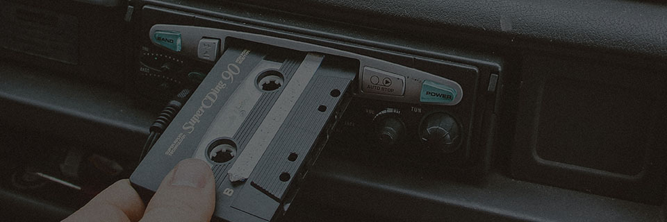

My Vision for an Audiobook

As a narrator and voice actor, I believe that it is deeply important to be true to your creative intent.
This means that before even the first chapter title is recorded, I like to discuss how I can bring those characters to the listener in a way that presents the story in the most natural, authentic way - almost as if you yourself were narrating.
Crafting an audiobook is an author and narrator, working together, to create an experience for the listener that is not only immersive, but irresistable.
Demo Reels

Humbly, I Present

Acting is about beckoning the listener to share an emotion with the character right now, in this moment. When the performance is invisible, all that's left is the story.
What People Have Said
Charla White (AudioBookReviewer.com) - The Thing from HR
Magnus Carlssen did an excellent job of performing and assuming each character. The story was easy to follow through the different voices he gave each character. He flowed between them easily and fluidly. He captured the very essence of each character and played them to the fullest extent possible. He paced himself well and spoke clearly and with a steady rhythm. An excellent narrator!
JohnnyT (Audible) - The Thing from HR
Brilliant narration. I was wonderfully surprised with the top notch narration of Magnus Carlssen. He was well up to the task of giving life and color to the wide array of characters and various scenes.
Roy M. Griffis (Author) - The Thing from HR
A pro in his approach to the work and production. He performed the story in a manner that brought the novel to life, in some places making it better than the way I'd heard it in my mind when originally composing it.
Amber Kirkpatrick (Author) - Unleashed
With his keen attention to detail and wonderfully nuanced approach to characters, Magnus brings book to life beyond an author's wildest dreams. The consummate professional, he is a pleasure to work with at all times, and I would not trust anytone else with my stories.
Anonymous - The Noss Saga
I had planned on listening to the books throughout an upcoming vacation starting Friday but I wound up binging both books in the last 2 weeks! It's been a while since I've enjoyed a book so much that I was looking at the clock saying "I can listen to another chapter" and kept going far longer than I should have. [Magnus is] doing an incredible job with the audiobook. He's one hell of a narrator and voice actor.
Amanda Simas (Audible) - Earthbound
All your senses are going as you wrestle with the happenings on page, made even more poignant by Magnus' voice over.
Amie Malkovich (Goodreads) - Earthbound
[Characters and plot] immediately sucked me into the story thanks to Carlssen's bard-like narration.
Studio & Equipment
Microphones:
- sE Electronics X1S Condenser
- sE Electronics T2 Condenser
- sE Electronics X1R Ribbon
- Blue Spark SL Blackout Condenser
- Motu M4 interface with ultra-clean preamps
Home Studio:
- Fully treated recording room
- HD video capable
- SourceConnect/Zoom/Discord available
Contact
Email directly: magnus@carlssen.co.uk